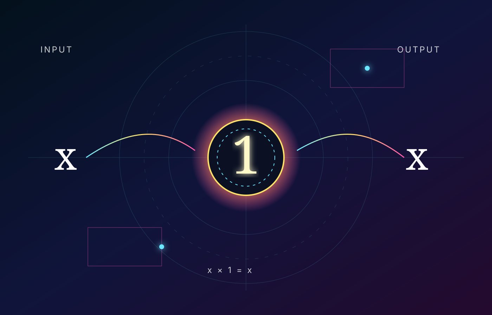
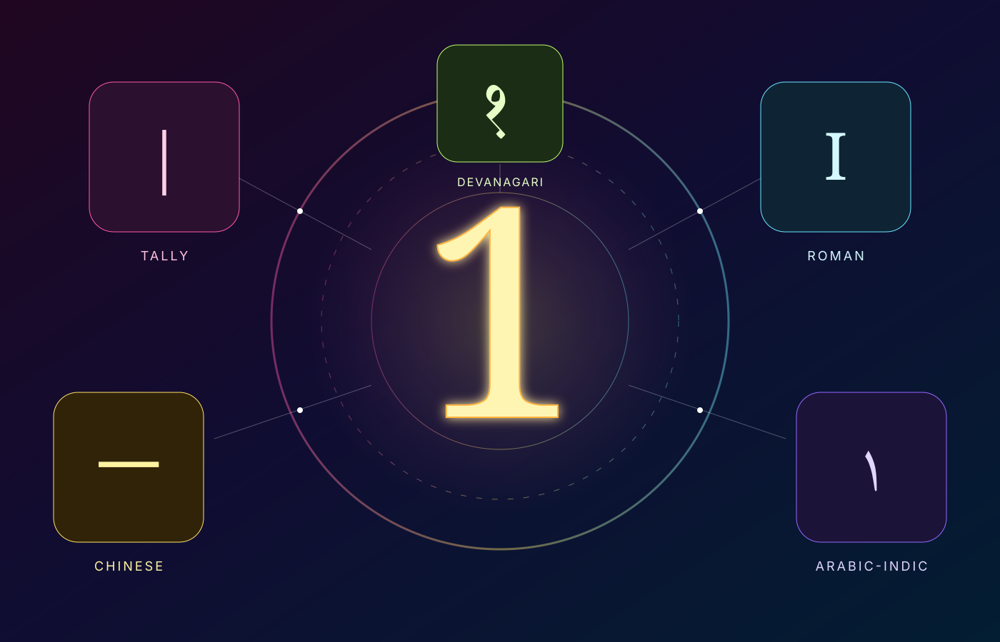

Every number deserves a museum.
Numbers is an expanding atlas of mathematical objects, their stories, their behavior, and the ideas humans built around them. The doors for 1, 2, and 3 are now open; the rest of the continuum is waiting.
One object. Three impossible rooms.
This museum treats mathematics as something to look at, move through, and experiment with—not just something to read.


A chart with no edge
The real number line cannot be exhaustively listed: between any two distinct real numbers lie infinitely many more. This instrument represents the continuum algorithmically. Zoom, pan, and inspect. Numbers 1, 2, and 3 now have open exhibits.
One, seen from many rooms
Instead of reducing a number to one encyclopedia page, the museum treats it as a subject with multiple galleries.
The number that leaves multiplication unchanged
Meet unity: the first positive integer, an odd number, a perfect square, and the multiplicative identity.
Neither prime nor composite
Why excluding 1 from the primes protects unique factorization—and why its identity role reaches through algebra.
From stroke to glyph
A cautious tour from tally-like marks and Brahmi numerals to the modern Hindu–Arabic “1.”
Unity, certainty, normalization
One as a unit, a complete probability, a Boolean signal, and a reference scale.
Touch the identity
Run interactive experiments: multiply anything by 1, change bases, raise 1 to powers, and explore a unit square.
Two, where the museum splits in two.
Pairing, parity, primality, binary growth, symmetry, and √2 give the second gallery a completely different architecture from the first.

The only even prime.
Two is the first number that makes a pair, the divisor that defines evenness, the base of binary notation, and the integer beneath one of the most famous irrational numbers: √2.
Pair, prime, parity
Meet the smallest prime and the only prime divisible by 2—the exception that defines the even/odd divide.
The smallest prime breaks the prime pattern
Explore modular parity, 2-adic valuation, arithmetic functions, powers of two, C₂, and a rigorous proof that √2 is irrational.
Two before “2”
Repeated marks, Brahmi traditions, Arabic transmission, European adoption, and the carefully separated history of incommensurability.
Two choices become a universe
Bits, symmetry, two-dimensional geometry, the octave's 2:1 ratio, helium, two-body mechanics, and grammatical duals.
Split. Pair. Double.
Group objects into pairs, test parity, grow 2ⁿ, translate decimal to binary, and watch Newton's method converge on √2.
Three, where lines become a triangle.
The third museum branches in three directions at once: odd-prime arithmetic, triangular geometry, and ternary structure—then keeps going into algebra, genetics, color, and celestial mechanics.

The first odd prime.
Three is 1+2, the second triangular number, 10 in base 3, the number of vertices in the simplest polygon, and the order of the symmetry hidden in the cube roots of unity.
Prime, triangle, triad
Meet the first odd prime and the only integer equal to the sum of every positive integer before it.
Arithmetic turns through 120 degrees
Explore divisibility by digit sum, modulo-3 classes, ternary notation, arithmetic functions, C₃, Fermat and Mersenne structure, cubes, and roots of unity.
From three strokes to the cubic
Follow numeral forms through Brahmi, Gupta, Nagari, Arabic, and European traditions, then enter the Renaissance battle over cubic equations.
Three coordinates. Three bases. Three bodies.
Triangles, RGB, codons, C₃ symmetry, ordinary 3D coordinates, lithium, ternary information, and the three-body problem.
Group. Rotate. Translate.
Build triplets, test divisibility, grow 3ⁿ, translate ternary, spin the cube roots of unity, and test whether three lengths can form a triangle.